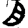

十不二門義
示珠指作法華十妙不二門註十不二門作法華本迹十不二門指要鈔文心解及明藏本並作十不二門顯妙解作法華玄記十不二門○今謂義同四種四諦義七種二諦義三諦義四悉檀義十法界義等之義義字不可無也。
卍新纂大日本續藏經 第56冊
No.925 十不二門義 (1卷)
【唐 道邃錄出】
第 1 卷
No. 925
十不二門義
然此迹門談其因果及以自他使一代教門融通入妙故凡諸義釋皆約四教及以五味意在開教悉入醍醐觀心乃是教行樞機仍且略點寄在諸說或存或沒非部正意故縱有施設詫事附法或辨十觀列名而已所明理境智行位法能化所化意有能詮詮中咸妙為辨詮內始末自他故具演十妙搜括一化出世大意罄無不盡故不可不了十妙大經故撮十妙為觀法大體若解迹妙本妙非遙應知但是離合異耳因果義一自他何殊故下文云本迹雖殊不思議一況體宗用只是自他因果法故況復教相只是分別前之四章使前四章與諸文永異若曉斯旨則教有歸一期縱橫不出一念三千世間即空假中理境乃至利益咸爾則止觀十乘成今自行因果起教一章成今化他能所則彼此照著法華行成使功不唐捐所詮可識故更以十門收攝十妙何者為實施權則不二而二開權顯實則二而不二法既教部咸開成妙故此十門不二為目一々門下以六即檢之本文已廣引誠證此下但直申一理使一部經旨晈在目前一者色心不二門二者內外不二門三者修性不二門四者因果不二門五者染淨不二門六者依正不二門七者自他不二門八者三業不二門九者權實不二門十者受潤不二門。
是中第一從境妙立名第二第三從智行立名第四從位法立名第五第六第七從感應神通立名第八第九從說法立名第十從眷屬利益立名一色心不二門者且十如境乃至無諦一々皆有總別二意總在一念別分色心何者初十如中相唯在色性唯在心體力作緣義兼心色因果唯心報唯約色十二因緣苦業兩兼惑唯在心四諦則三兼色心滅唯在心二諦三諦皆俗具色心真中唯心一實及無准此可見既知別已攝別入總一切諸法無非心性一性無性三千宛然當知心之色心即心名變々名為造々謂體同是則非色非心而色而心唯色唯心良由於此故知但識一念遍見己他々生他佛尚與心同況己心生佛寧乖一念故彼彼境法差而不差二者內外不二門者凡所觀境不出內外々謂託彼依正色心即空即中空中妙故心色體絕唯一實性無空假中色心宛然豁同真淨無復眾生七方便異不見國土淨穢差品而帝網依正終曰炳然所言內者先了外色心一念無念唯內體三千即空假中是則外法全為心性心性無外攝無不周十方諸佛法界有情性體無殊一切咸遍誰云內外色心己他此即用向色心不二門成。
三修性不二門者性德只是界如一念此內界如三法具足性雖本爾藉智曰修由修照性由性發修在性則全修成性起修則全性成修性無所移修常宛爾修又二種順修逆修順謂了性為行逆謂背性成迷々了二心々雖不二逆順二性々事恒殊可由事不移心則令迷修成了故須一期迷了照性成修見性修心二修俱泯又曉順修對性有離有合離謂修性各三合謂修二性一修二各三共發性三是則修雖具九九只是三為對性明修故合修為二々與一性如水為波二亦無二亦如波水應知性指三鄣是故具三修從性成々三法爾達無修性唯一妙乘無所分別法界洞朗此由內外不二門成。
四因果不二門者眾生心因既具三軌此因成果名三涅槃因果無殊始終理一若爾因德已具何不住因但由迷因各自謂實若了迷性實唯住因故久研此因因顯名果只緣因果理一用此一理為因理顯無復果名豈可仍存因號因果既泯理性自亡只由亡智親疎致使迷成厚薄迷厚薄故強分三惑義開六即名智淺深故知夢勤加功空名惑絕幻因既滿鏡像果圓空像雖即義同而空虗像々實々故稱理本有空虗故迷轉性成是則不二而二立因果殊二而不二始終體一若謂因異果因亦非因曉果從因々方尅果所以三千在理同名無明三千果成咸稱常樂三千無改無明即明三身並常俱體俱用此以修性不二門成。
五染淨不二門者若識無始即法性為無明故可了今即無明為性法法性之無明遍造諸法名之為染無明之法性遍應眾緣號之為淨濁水清水波濕無殊清濁雖由緣而濁成本有濁雖本有而全體是清以二波理通舉體是用故三千因果俱名緣起迷悟緣起不離剎々那々性常緣起理一々理之內而分淨穢別則六穢四淨通則十通淨穢故知剎那染體悉淨三千未顯驗體仍迷故相似位成六根遍照々分十界各具灼然豈六根淨人謂十定十分真垂迹十界亦然乃由果成等彼百界故須初心而遮而照々故三千恒具遮故法爾空中終曰雙亡終曰雙照不動此念遍應無方隨感而施淨穢斯泯忘淨穢故以空以中仍由空中轉染為淨由了染淨空中自亡此以因果不二門成。
六依正不二門者已證遮那一體不二良由無始一念三千以三千中生陰二千為正國土一千屬依依正既居一々心々豈分能所雖無能所依正宛然是則理性名字觀行已有不二正依之相故使自他因果相攝但眾生在理果雖未弁一切莫非遮那妙境然應復了諸佛法體非遍而遍眾生理性非局而[尸@句]始終不改大小無妨因果理同依正何別故淨穢之土勝劣之身塵身與法身量同塵國與寂光無異是則一々塵剎一切剎一々塵身一切身廣狹勝劣難思議淨穢方所無窮盡若非三千空假中安能成茲自在用如是方知生佛等彼此事理[牙-(必-心)+?]相收此以染淨不二門成。
七自他不二門者隨機利他事乃憑本々謂一性具足自他方至果位自即益他如理性三德三諦三千自行唯在空中利他三千赴物々機無量不出三千能應雖多不出十界々界轉現不出一念土々互生不出寂光眾生由理具三千故能感諸佛由三千理滿故能應々遍機遍欣赴不差不然豈能如鏡現像鏡有現像之理形有生像之性若一形對不能現像則鏡理有窮形事未通若與鏡隔則容有是理無有形對而不像者若鏡未現像由塵所遮去塵由人磨像非關磨者以喻觀法大旨可知應知理雖自他具足必藉緣了為利他功復由緣了與性一合方能稱性施設萬端則不起自性化無方所此由依正不二門成。
八三業不二門者於化他門事分三密隨順物理得名不同心輪鑒機二輪設化現身說法未曾毫差在身分於真應在法分於權實二身若異何故乃云即是法身二說若乖何故乃云皆成佛道若唯法身應無垂世若唯佛道誰施三乘身尚無身說必非說身口平等等彼意輪心色一如不謀而化常冥至極稱物施為豈非百界一心界々無非三業界尚一念三業豈殊果用無虧因必稱果若信方知三密本有百界三業俱空假中故使稱宜遍赴為果一々應色一々言音無不百界三業具足化復作化斯之謂歟故一念凡心已有理性三密相海一塵報色同在本理毗盧遮那方乃名為三無差別此以自他不二門成。
九權實不二門者平等大慧常鑒法界亦由理性九權一實々復九界權亦復然權實相冥百界一念不可分別任運常然至果乃由契本一理非權非實而權而實此即如前心輪自在致令身口赴權實機三業一念無乖權實不動而施豈應隔異對說即以權實立稱在身則以真應為名三業理同權實冥合此以三業不二門成。
十受潤不二門者物理本來性具權實無始薰習或實或權々實由薰理恒平等遇時成習行願所資若無本因薰亦徒設遇薰自異非由性殊性雖無殊必藉幻發幻機幻感幻應幻赴能應所化並非權實然由生具非權非實成權實機佛亦果具非權非實為權實應物機契應身土無偏同常寂光無非法界故知三千同在心地與佛心地三千不殊四微體同故權實益等此以權實不二門成。
是故十門々門通入色心乃至受潤咸然故使十妙始終理一如境本具三依理生解故名為智々解導行々解契理三法相符不異而異而假立淺深設位簡濫三法只是證彼理三下之五章三法起用三法既是一念三千既空假中成故有用若了一念十方三世諸佛之法本迹非遙故重述十門令觀行可識首題既爾覧別為總符文可知。
十不二門義(終)
考異
然此
近刻本點然字讀シカルニ或シカモ古本不讀然字然此二合訓コノ者與今本同○今案然此合訓例猶論語如示諸斯(文)其斯之謂(文)廣韻龍龕手鑑並云然語助也又如也是也(文)又案禮記云穆公召縣子而問然曰(文)注云然之言焉也(文)嘉應元年清原氏點本禮記問字讀トフテ而於然字傍細注不讀。
及無
顯妙無字下加諦字。
終曰炳焉
註十指要文心顯妙明本宋籤並日作自寬喜本示珠猪熊弘籤貞籤科籤諸本並與今同○今謂以下終日雙亡終日雙照對見此文不見差品即雙亡也終日炳焉義當雙照日字之允可見○近刻本日形長作古本曰形方作與今同○今案陀羅尼對譯嚩曰哩字作方形但明藏經曰作長形耳凡唐已上書曰二字俱作方形是故古書遇二字或相疑之尚書云即命曰記功(文)毛詩云豈不曰戒(文)並陸氏釋文云音越一音人實反(文)又案說文云以口一象形古文象形(文)篇韻貫珠集云六書之法一象形象物之形作字日月之字是也(文)口作方形則曰形須然者又說文云从口乙聲亦象口氣出也凡之屬皆以(文)書家者流說云曰者口左隅相連者缺隅不連以分兩字云云毛晉校刊說文揩字曰如書家說。
二修
註十指要並作二心。
曉
註十作了。
波水
寬喜本註十並作波為水。
空名
註十作空冥。
像々實々
一本作像實々々其餘諸本作像實像實○今案古卷本毛詩作嗟々嘆々之不足故詠々歌々之不足故(文)振々君子歸々哉々(文)十三經本作嗟歎之嗟歎之(乃至)永歌之永歌之(文)歸哉歸哉(文)善相公奉菅家書政事要略作努々力々本朝文粹作努力努力敺陽侚書幸々甚々弘法大師書所々望々莫々責々古書存者皆一例也。
因異果
寬喜本作因果異而傍書異果。
號
註十作名。
雖由
註十顯妙並作雖即由。
能應
註十作能化。
與鏡
文心元和科籤並作形與鏡。
化無
示珠宋籤並作應無。
界一心
示珠心作念。
斯之
寬永科籤之作以。
亦由
一古本由字無寬喜本有由而墨抹。
念不
註十作念亦不。
理恒
明本恒作常。
幻赴
註十脫。
生具
文心作性具。
契應
註十文心顯妙明本並作應契。
故權
示珠註十文心顯妙並脫故字。
本具
註十文心顯妙明本宋籤並作本來具。
三法既
註十脫三法。
No. 925-A
右十不二門義以大原如來藏中古板本所翻刻也此本傳為以根本大師手書所鏤板者字樣之古雅筆勢之飛動與山家本法華經及開結二經無差毫末則真大師手迹而存今千歲之後者可謂無價寶珠也哉如其訓點及元久等數字葢後人以朱所加也又有一本尾記云以慈覺大師之點點之訓點亦出於祖師可尚也猪熊抄云本朝古本者山家將來本也對邃滿(二師)而稟承之本故雖一字不可有謬也良大師航海之行意在求善本教乘故瑯瑘道邃座主勾當書寫台州陸淳刺史印記目錄此書儼然載其目錄又延喜年間勅撰目錄亦載此書也可見山家本者本朝初傳之古本而為第一善本也若宋僧知禮於指要鈔叨議本朝教乘者葢依不知本朝有此善本矣況示珠指之作在宋雍熈三年丙戌則後於延曆將來者百八十年後於延喜目錄者七十餘年也既有先傳之善本何據後人之杜撰指要所云不亦妄乎今刻此善本更對挍諸本彼此照著使是非皎凡宋本竄改不止此書別作古本宋本明本優劣辨詳之庶幾學者開擇法之眼正得道之針云爾。